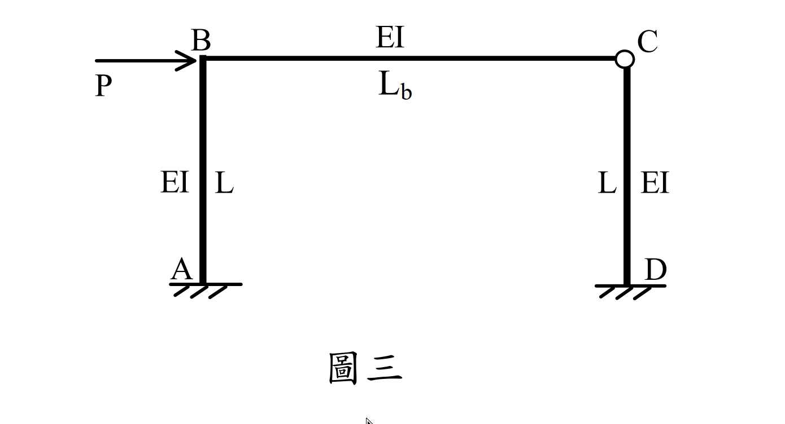

考題編號：SA-2024-3
主分類： SA-U2-3 靜不定結構分析
副分類： 無
分析法： 傾角變位法
標籤： 傾角變位法, 門型剛構架, 對稱性, 極值比例
1. 原始題目重述 (Problem Restatement)
如圖三所示之門型構架，梁與柱之斷面 EI 皆相同，但梁長大於柱長，也就是 $L_b / L > 1$。已知兩根柱最大彎矩的數值大小與梁最大彎矩的數值大小其比為 2：1，試求此時 $L_b / L = ?$ 本題限以傾角變位法作答，分析時可忽略軸向變形。（25 分）

圖說：對稱門型剛構架，柱 AB 與 CD 長度為 L，梁 BC 長度為 Lb。底部 A 與 D 均為固定端。節點 B 承受向右之水平力 P。
2. 考題核心精神與出題者意圖 (Core Concepts & Examiner's Intent)
本題是相當經典的「反向工程」題型。有別於傳統題目給定所有幾何尺寸求內力，本題是給定內力比例條件要求反推幾何參數。
出題者旨在測驗考生：
- 反對稱變形條件：能否利用對稱結構受反對稱載重的特性，直接判定 $\theta_B = \theta_C$，大幅減少未知數。
- 傾角變位法的代數操作：在不具體代入數值的情況下，以符號推導出各端點彎矩的表示式。
- 彎矩極值的邏輯判斷：必須透過代數比較 $|M_{AB}|$ 與 $|M_{BA}|$ 的大小，自行判斷柱的最大彎矩是發生在柱頂還是柱底，進而套用題目給定的比例條件。
3. 解題戰略地圖與陷阱分析 (Strategic Roadmap & Trap Analysis)
- 設定未知數與變形條件：
- 令 $k = L_b / L$。
- 因為結構對稱、載重反對稱，變形亦呈反對稱，故 $\theta_B = \theta_C = \theta$。
- 側移角 $\psi_{AB} = \psi_{CD} = \psi$。 - 建立傾角變位方程式：寫出 $M_{AB}$、$M_{BA}$ 與 $M_{BC}$ 關於 $\theta$ 與 $\psi$ 的函數。
- 節點平衡與代換：利用 $\Sigma M_B = 0$，找出 $\theta$ 與 $\psi$ 的比例關係，並代回彎矩方程式中，使所有彎矩皆表示為 $\psi$ 的倍數。
- 極值判斷與求解：
- 梁無跨中載重，最大彎矩必在端點 $|M_{BC}|$。
- 柱無跨中載重，需比較 $|M_{AB}|$ 與 $|M_{BA}|$。利用題目給定 $k > 1$ 判斷出 $|M_{AB}| > |M_{BA}|$。
- 依據 $|M_{AB}| / |M_{BC}| = 2$，解出 $k$。 - 陷阱分析：
- 未判斷 $|M_{AB}|$ 與 $|M_{BA}|$ 孰大孰小，若誤用 $|M_{BA}|$ 計算，會發現 $|M_{BA}| = |M_{BC}|$，永遠比例為 1:1，無法解出答案而卡住。
- 忘記 $\theta_B = \theta_C$ 雖不會算錯，但會多花一倍時間解聯立方程式。
3.5 變數層次分析 (Variable Hierarchy Analysis)
最終目標
以傾角變位法導出柱與梁最大彎矩的代數式，並透過其比例為 2，反求 $k = L_b/L$。
本題關鍵公式（依計算順序）
$$ M_{ij} = \frac{2EI}{L} (2\theta_i + \theta_j - 3\psi) + FEM_{ij} \quad \text{(傾角變位法基本式)} $$
$$ \Sigma M_B = M_{BA} + M_{BC} = 0 \quad \text{(節點平衡)} $$
$$ \theta_B = \theta_C \quad \text{(反對稱變形條件)} $$
$$ \frac{|M_{col,max}|}{|M_{beam,max}|} = 2 \quad \text{(題設條件)} $$
L1：題目直接給定
| 符號 | 數值 | 說明 |
|---|---|---|
| $K_c$ | $EI/L$ | 柱線剛度 |
| $K_b$ | $EI/L_b$ | 梁線剛度 |
| $\theta_A, \theta_D$ | $0$ | 固定端邊界條件 |
| $FEM_{ij}$ | $0$ | 桿件上無載重 |
L2：需知識點推導
| 符號 | 公式／來源 | 卡關? |
|---|---|---|
| $M_{AB}, M_{BA}, M_{BC}$ | 傾角變位方程式 | |
| $\theta$ 與 $\psi$ 關係 | 節點 B 彎矩平衡方程式 |
L3：深層知識（不懂就卡住）
| 知識點 | 說明 | 卡關? |
|---|---|---|
| 極值判斷 | 必須知道證明 $|M_{AB}| > |M_{BA}|$ 才能確定柱的最大彎矩位置，進而列出正確的等式。 |
4. 步驟化詳細計算過程 (Step-by-Step Detailed Calculation)
Step 1: 參數設定與變形條件
令比值 $k = \frac{L_b}{L}$。
柱之線剛度 $K_c = \frac{EI}{L}$，梁之線剛度 $K_b = \frac{EI}{L_b} = \frac{EI}{kL} = \frac{K_c}{k}$。
因結構幾何對稱、受力為側向反對稱載重，故產生反對稱變形：
節點旋轉角：$\theta_B = \theta_C = \theta$
柱側移角：$\psi_{AB} = \psi_{CD} = \psi$
梁側移角：$\psi_{BC} = 0$
邊界條件：$\theta_A = \theta_D = 0$
Step 2: 建立傾角變位方程式
$$ M_{AB} = 2K_c (\theta_B - 3\psi) = 2K_c (\theta - 3\psi) $$
$$ M_{BA} = 2K_c (2\theta_B - 3\psi) = 2K_c (2\theta - 3\psi) $$
$$ M_{BC} = 2K_b (2\theta_B + \theta_C) = 2\left(\frac{K_c}{k}\right) (3\theta) = \frac{6K_c}{k}\theta $$
Step 3: 節點平衡與代換
於節點 B 取力矩平衡：
$$ \Sigma M_B = 0 \implies M_{BA} + M_{BC} = 0 $$
$$ 2K_c (2\theta - 3\psi) + \frac{6K_c}{k}\theta = 0 $$
消去 $2K_c$：
$$ 2\theta - 3\psi + \frac{3}{k}\theta = 0 $$
$$ \left(2 + \frac{3}{k}\right)\theta = 3\psi \implies \left(\frac{2k+3}{k}\right)\theta = 3\psi $$
$$ \theta = \frac{3k}{2k+3}\psi $$
Step 4: 找出各端點彎矩的相對大小
將 $\theta$ 關係式代回彎矩方程式中：
$$ M_{BC} = \frac{6K_c}{k} \left( \frac{3k}{2k+3}\psi \right) = \frac{18K_c}{2k+3}\psi $$
梁 BC 無跨中載重，彎矩圖呈直線，故梁的最大彎矩為端點彎矩：
$$ |M_{beam,max}| = |M_{BC}| = \frac{18K_c}{2k+3}|\psi| $$
由 $\Sigma M_B = 0$ 知 $M_{BA} = -M_{BC}$：
$$ |M_{BA}| = \frac{18K_c}{2k+3}|\psi| $$
計算柱底彎矩 $M_{AB}$：
$$ M_{AB} = 2K_c \left( \frac{3k}{2k+3}\psi - 3\psi \right) = 2K_c \left( \frac{3k - 3(2k+3)}{2k+3} \right)\psi = 2K_c \left( \frac{-3k - 9}{2k+3} \right)\psi = -\frac{6(k+3)K_c}{2k+3}\psi $$
$$ |M_{AB}| = \frac{6(k+3)K_c}{2k+3}|\psi| $$
Step 5: 判斷極值並求解 $k$
柱 AB 無跨中載重，最大彎矩必定在兩端（A點或B點）之中。
比較 $|M_{AB}|$ 與 $|M_{BA}|$：
因為題目已知 $L_b / L > 1$，即 $k > 1$。
$|M_{AB}|$ 分子常數部分：$6(k+3) > 6(1+3) = 24$
$|M_{BA}|$ 分子常數部分：$18$
顯然 $6(k+3) > 18$，故 $|M_{AB}| > |M_{BA}|$，柱的最大彎矩發生在柱底。
$$ |M_{col,max}| = |M_{AB}| = \frac{6(k+3)K_c}{2k+3}|\psi| $$
依據題目給定條件「兩根柱最大彎矩與梁最大彎矩大小其比為 2：1」：
$$ \frac{|M_{col,max}|}{|M_{beam,max}|} = 2 $$
$$ \frac{\frac{6(k+3)K_c}{2k+3}|\psi|}{\frac{18K_c}{2k+3}|\psi|} = 2 $$
$$ \frac{6(k+3)}{18} = 2 $$
$$ \frac{k+3}{3} = 2 \implies k+3 = 6 \implies k = 3 $$
$$ \boxed{\frac{L_b}{L} = 3} $$
5. 關鍵爭議點與進階探討 (Critical Issues & Advanced Discussion)
- 固定端與鉸支承的影響：若本題的柱底 (A、D) 為鉸支承，則 $M_{AB} = 0$，柱的最大彎矩必然是 $M_{BA}$。但在節點平衡下 $|M_{BA}| = |M_{BC}|$，會導致柱與梁的最大彎矩比值恆為 1:1，不可能滿足題目 2:1 的條件。因此，透過代數邏輯也能反證底端必須是固定端。
- 對稱性的強大威力：處理此類具有對稱幾何配置的剛構架時，若能第一眼看出側向載重會引發反對稱變形 ($\theta_B = \theta_C$)，將原本兩個旋轉自由度降為一個，計算時間至少能節省一半以上，是考場上搶分的關鍵技巧。